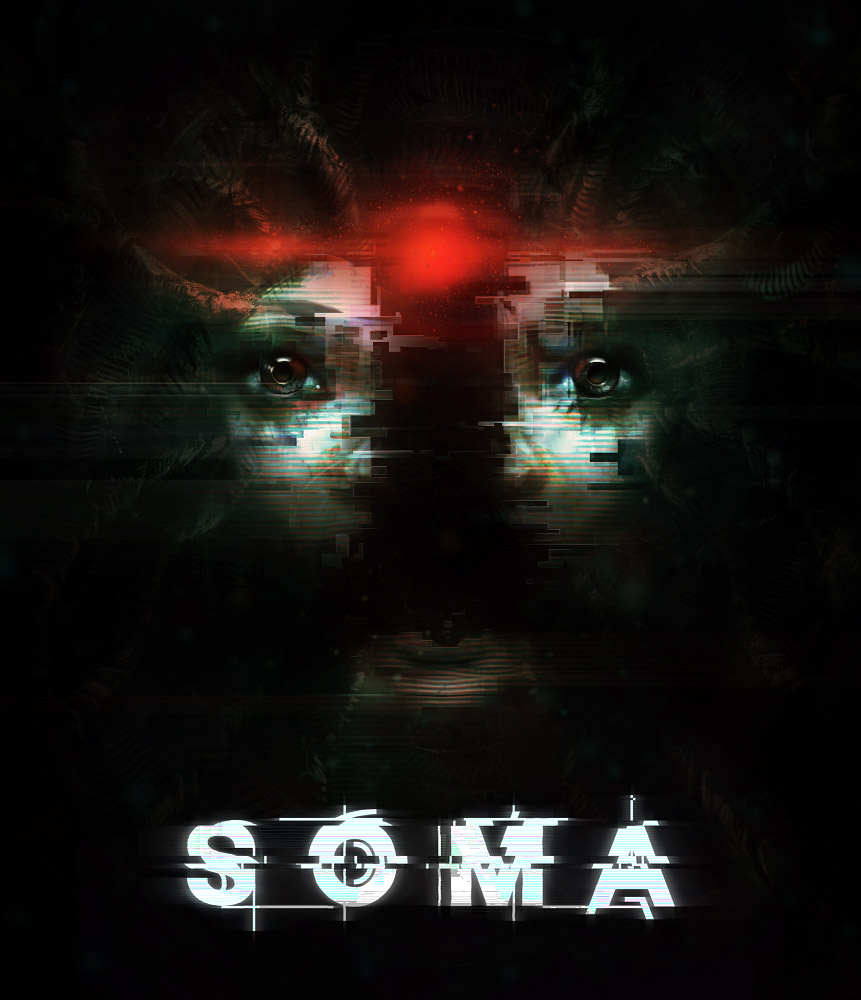
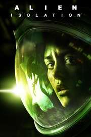

Among the Sleep (2014) IMBd Rating: 6.6/10 ING Rating: 7.3/10 A first-person survival horror action-adventure game interested in the nature of trauma. With the help of his teddy bear, you play as a toddler that tries to escape a nightmarish landscape while being pursued by dark forces. PLATFORMS:
PlayStation 4, Nintendo Switch, Xbox One, Microsoft Windows, macOS, and Macintosh operating systems
Amnesia: The Dark Descent (2010) IMDb Rating: 8.2/10 ING Rating: 8.5/10 A first person survival horror game about immersion, discovery, and living through a nightmare. A young man, Daniel, awakes is a dreary castle with no memory of his past and discovers that he diliberately erased his memory and must travel through the dark halls to kill the evil baron Alexander. PLATFORMS: PlayStaion 4, Nintendo Switch, Xbox One, Microsoft Windows, and macOS
Bendy and the Ink Machine (2017) IMBd Rating: 7.4/10 ING Rating: N/A An episodic first person puzzle action horror game that begins in the far days past of animation and ends in a very dark future. Henry, a former traditional animator, gets a strange note from a friend that invited him to his old workplace. Henry finds the place abandoned and discover a mysterious ink machine creating all sorts of abonimations. PLATFORMS: PlayStation 4, Xbox One, Nintendo Switch, Microsoft Windows, Macintosh operating systems, and macOS
Until Dawn (2015) IMBd Rating: 8.8/10 ING Rating: 7.5/10 Am interactive drama horror game where a group of teen friends spend the weekend in a ski lodge on the anniversery of their friends' disappearance. Unaware that they are not alone, you must keep the cast of seven friends alive during the night of horror. PLATFORMS:
PlayStation 4
OutLast (2013) IMBd Rating: 8.3/10 ING Rating: 7.8/10 A survival-horror game that follows a freelance journalist, Miles Upshur, to investigate the Mount Massive Asylum hoping to break the story of his life. With his trusty nigh vision camera, he finds the place to be overun by the alylum's derranged paitents so he must survive while also figuring out the mystery of the place. PLATFORMS:
PlayStation 4, Nintendo Switch, Xbox One, Microsoft Windows, and macOS

Soma (2015) IMBd Rating: 8.5/10 ING Rating: 8.1/10 A Sci-Fi horror game played from a first-person perspective of Simon Jarrett who finds himself in a mysterious ravaged facility after losing consiousness during a new, experimental brain scan which was suggested to him for his brain damage after his car accident. PLATFORMS:
PlayStation 4, Xbox One, Microsoft Windows, and macOS

Alien Isolation (2014) IMBd Rating: 8.7/10 ING Rating: 5.9/10 A first-person survival horror adventure game sets 15 years after the events of Alien (1979). Ripley's daughter becomes trapped on an alien-infested space station which holds answers to the mystery of her mother's disappearance. PLATFORMS:
PlayStation 4, PlatStaion 3, Nintendo Switch, Xbox One, Xbox 360, Microsoft Windows, macOS, and Macintosh operating systems
Man of Medan (2019) IMBd Rating: 6.7/10 ING Rating: 7/10 A cinematic-horror game where four friends and their captain set sail on a holiday to find a rumored WWII wreck, but as the day unfolds, a storm rolls through and soon their trip changes into something much more sinister. PLATFORMS:
PlayStation 4, Xbox One, and Microsoft Windows
Little Nightmares (2017) IMBd Rating: 8.2/10 ING Rating: 8.8/10 A third-person 3D action adventure game with stealth and exploration elements that follows 9-year-old girl, Six, who was kidnapped from her home to work in The Maw, a surreal underwater resort catering to the whims of the power of sick fictional creatures. PLATFORMS:
PlayStation 4, Nintendo Switch, Xbox One, and Google Stadia
Little Nightmares 2 (2021) IMBd Rating: 8.7/10 ING Rating: 7/10 A suspense-adventure game that allows you to play as Mono, a young boy trapped in a world that has been distorted by the humming transmission of a distant signal tower. PLATFORMS:
PlayStation 4, PlayStation 5, Nintendo Switch, Xbox One, Xbox Series X and Series S, Microsoft Windows, and Google Stadia
Dead By Daylight (2016) IMBd Rating: 7.3/10 ING Rating: 9/10 A action-survival multiplayer game where one player takes the role of the savage killer, and the other four players play as Survivors. Try to escape the killer and avoid being being caught and killed by orginal killers or killers from your favorite horror movies. PLATFORMS:
PlayStation 4, PlayStation 5, Nintendo Switch, Xbox One, Xbox Series X and Series S, Microsoft Windows, ISO and Google Stadia
OutLast 2 (2017) IMBd Rating: 7.5/10 ING Rating: 8.3/10 A sequel to the first game, OutLast, OutLast 2 is a twisted new journey into the depth of the human mind and its own dark secrets. It follows investigative journalists Blake and his wife Lynn who travel to the Arizona Desert to pursue a lead on a popular suicide, but are soon ambushed by a mysterious and terrifying cult. PLATFORMS:
PlayStation 4, Nintendo Switch, Xbox One, and Microsoft Windows
Layers of Fear (2016) IMBd Rating: 7.3/10 ING Rating: 5.8/10 A psychedelic horror that will keep you on edge as you discover the secrets of a tormented painters madness, as you walk through a constantly shifting house. PLATFORMS:
PlayStation 4, Nintendo Switch, Xbox One, Microsoft Windows, and Macintosh operating systems
Devotion (2019) IMBd Rating: 8.1/10 ING Rating: 8.2/10 A first-person story inspired by East Asian Folk culture, depicting the life of a family shawdowed by religious beliefs. Explore as a 1980s Taiwan apartment-complex lost in time gradually shift into a hellish nightmare. PLATFORMS:
Microsoft Windows and macOS
Visage (2020) IMBd Rating: 7.5/10 ING Rating: N/A A first-person psychological horror game set inside a huge house where many families have been killed. Wander through the gloomy corridors and explore every room while reliving the terrible events that happened there. PLATFORMS:
PlayStation 4, PlayStation 5, Xbox One, Xbox Series X and Series S, and Microsoft Windows
P.T. (2014) IMBd Rating: N/A ING Rating: N/A A curious interactive experience that is a terrifying journey through a home filled with unexpected encounters and bizzare mysteries. PLATFORMS:
PlayStation 4
Phasmophobia (2020) IMBd Rating: 7.1/10 ING Rating: N/A A 4 player online co-op psychological horror where you and your team members of paranormal investigators will enter haunted locations filled with paranormal activity and gather as much evidence of the paranormal as you can. PLATFORMS:
Microsoft Windows
Slender: The Eight Pages (2014) IMBd Rating: 6.5/10 ING Rating: N/A A young girl must collect 8 pages scattered throughout a forest, while evading a malevolent creature who wants to kill her. PLATFORMS: